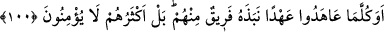
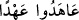
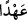
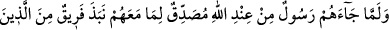

99. Andolsun ki sana apaçık âyetler indirdik. (Ey Muhammed!) Onları ancak
fâsıklar inkâr eder.
Çünkü böyle olmayanlardan başkası kalkıp da bu kadar açık âyetleri inkâr etmeye
cür’et edemez.
Hasan (Basrî) demiştir ki; “Fısk tâbiri, günah çeşitlerinden birini işâret etmek için
kullanılırsa, küfür olsun, başka bir günah olsun, bunun çok büyük bir cürüm olduğuna
delâlet eder.”
Şunu iyice bilmek gerekir ki Kur’ân, Allah Teâlâ’nın karanlıkları kendisiyle
aydınlattığı ilâhî bir nûrdur. Yahûdîler bu nûru söndürmeye çalışmışlardır ama, bunu
(asla
başaramamışlar)
ve
başaramayacaklardır
da.
Çünkü
Allah
nûrunu
tamamlayacaktır.
Yahûdîlerin durumu şuna benzemektedir: Karanlık bir gecede sağlam ve sakat bir
takım insanlar hamama gider, herkes hamamdayken elinde ışıkla biri içeri girdiğinde
ayıp ve kusurlular ışığı söndürmek için koşuşurlar. Çünkü onlar kusurlarının
görülmesinden çekinirler. İşte yahûdîler de ayıp ve kusurlarını açığa çıkaran Kur’ân
nûrunu söndürmeye koşmuşlardır.
Yanmış, parlak mumu o cemiyyet ashâbı istemez.
Çünkü gecenin karanlığında ayıpları gizli kalsın isterler,
Güneş doğup aydınlık çıkınca kusurları zâhir olur,
Çünkü perde kalkmış, bütün gizli haller ortaya çıkmıştır artık.
100. Ne zaman onlar bir antlaşma yaptılarsa, yine kendilerinden bir gurup onu
bozmadı mı? Zâten onların çoğu îmân etmez.
Âyetin başındaki soru edâtı olan “hemze” istifhâm-ı inkârîdir. Yâni onların
durumunun tasvîb edilmediğini belirtir. Âyet, makamın gerektirdiği: “Çok açık olduğu
halde âyetleri inkâr mı ettiler?” takdîrine atıftır. ( __WORD__ ) derken ( __WORD__ ) mef’ûl-i
mutlaktır. Bir kısmının inkârı, ahdi bozmaları, onu terketmeleridir. “Ferîk” kelimesi
“grup” ve “tâife” mânâsına, azlığa da, çokluğa da işâret edebilir. Bu kelimenin
kullanılması içlerinde ahdi bozmayanların da var olduğunu gösterir. “Onların çoğu
Tevrât’ı yalanlarlar ve herhangi bir din üzere de değildirler. Ahidlere vefâ
göstermemeyi de günahtan saymamışlardı. Bu âyet, aynı zamanda ahde vefâsızlık
edenlerin az olduğu vehmini de bertaraf etmek için gelmiştir.